Projects
Exhibitions
Over the past 15 years I have curated or produced more than 80 exhibitions exploring the big questions that art and science share: the nature of the cosmos, the future of the planet, and what it means to be alive in a rapidly changing world. The exhibitions below are a small selection.
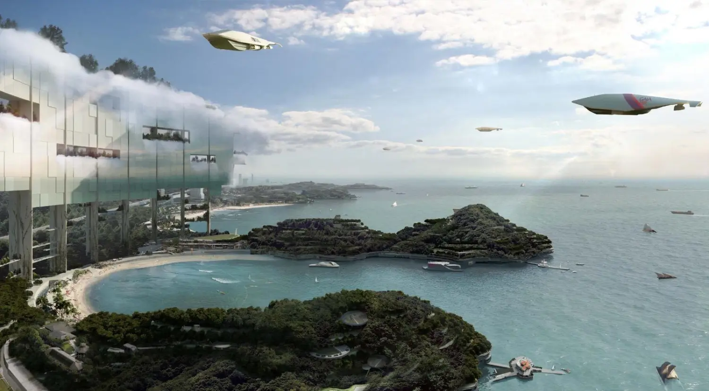
Sep 2025 – Feb 2026 · ArtScience Museum, Singapore
Another World Is Possible
A major exhibition about how futures are imagined and built, co-curated with Liam Young and developed in partnership with DesignSingapore Council and ACMI. Drawing on cinema, architecture, design, and speculative fiction, it gathers voices from Afrofuturism, Indigenous cosmologies, and Asian futurisms to argue that the future is not a destination but something already being made.
Visit →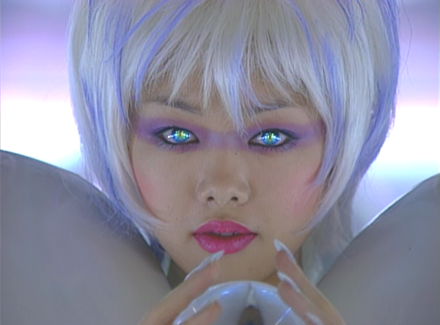
Oct 2023 – Mar 2024 · ArtScience Museum, Singapore
New Eden: Science Fiction Mythologies Transformed
A contemporary art exhibition bringing together 24 Asian women artists — including Mariko Mori, Cao Fei, and Lee Bul — to explore how science fiction tropes such as parallel universes and transcendence may have deeper roots in Asian philosophy than Western popular culture has acknowledged. Toured to Science Gallery Melbourne in 2024.
Visit →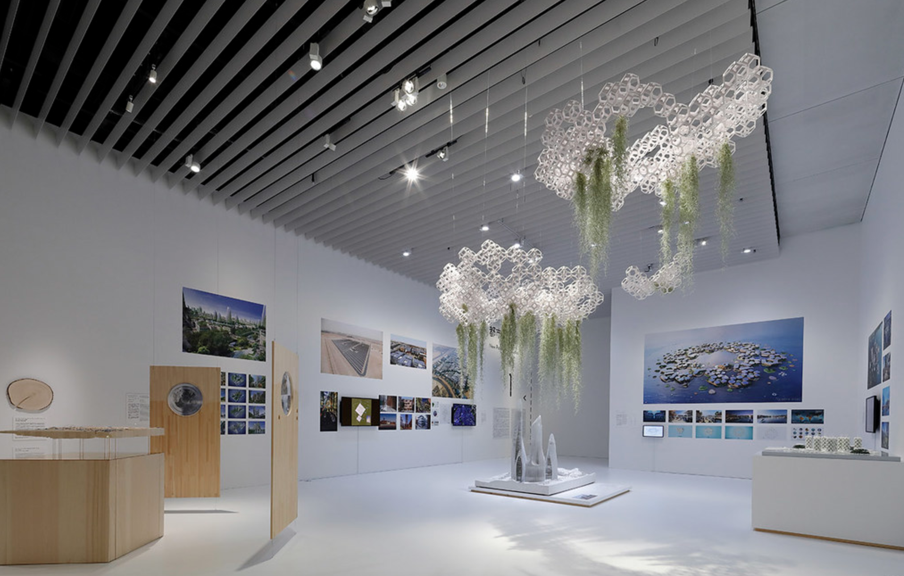
Nov 2019 – Mar 2020 · Mori Art Museum, Tokyo
Future and the Arts: AI, Robotics, Cities, Life
Co-curated with Mori Art Museum, this major exhibition brought together over 100 projects across AI, biotechnology, robotics, and architecture to ask what it means to be human in the near future. One of the most ambitious exhibitions on the subject produced by any museum in the world at that moment.
Visit →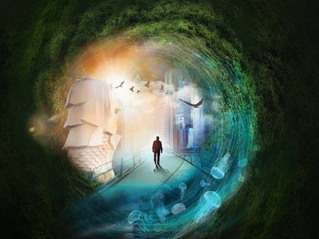
Nov 2019 – Aug 2020 · ArtScience Museum, Singapore
2219: Futures Imagined
Developed for Singapore's Bicentennial, this exhibition placed visitors inside speculative futures shaped by climate change and biodiversity loss, commissioning new work from more than 30 artists, designers, and architects worldwide. It remains the clearest expression of my belief that giving people an embodied, experiential encounter with possible futures is one of the most powerful things a museum can do.
Visit →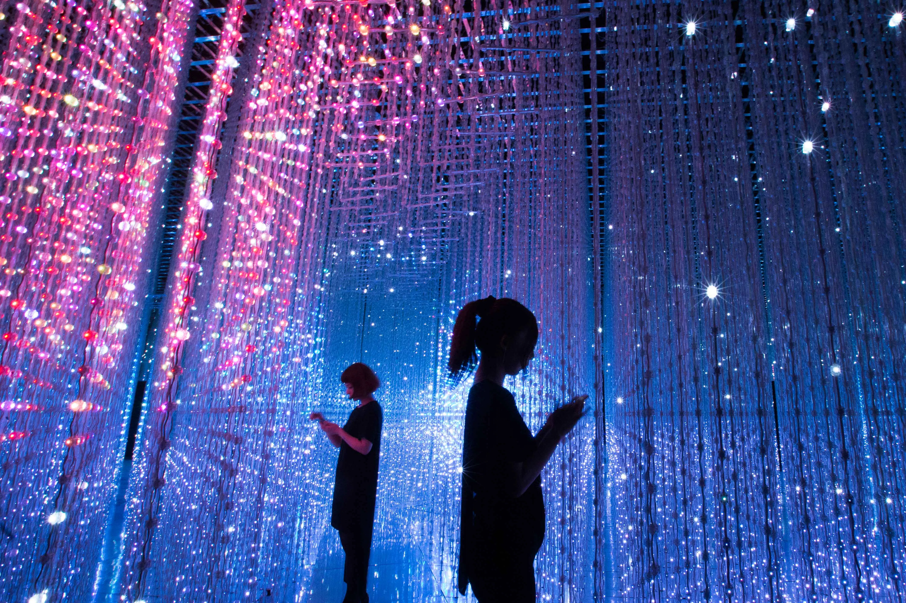
Mar 2016 – Ongoing · ArtScience Museum, Singapore
Future World: Where Art Meets Science
A permanent exhibition of interactive installations by teamLab, now seen by over 4.5 million visitors, that places visitors inside digital environments inspired by the natural world. The show evolves continuously, with new works added each year, and sits at the heart of the museum's mission to show how art, science, technology, and nature are inextricably connected.
Visit →
Jul 2016 – Jan 2017 · Mori Art Museum, Tokyo & ArtScience Museum, Singapore
The Universe and Art
Co-curated with Mori Art Museum, this exhibition brought together over 120 artworks, scientific manuscripts, and artefacts spanning ancient cosmologies, Renaissance astronomy, and contemporary art. It asked what happens when art, science, and mythology address the same fundamental questions about the nature of the cosmos.
Visit →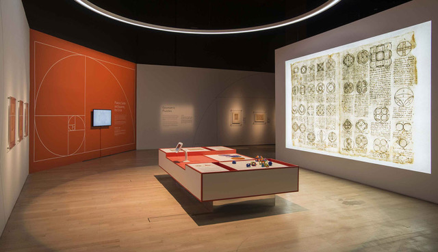
Nov 2014 – May 2015 · ArtScience Museum, Singapore
Da Vinci: Shaping the Future
The first exhibition of Leonardo da Vinci's original works in Southeast Asia, co-curated with the Biblioteca Ambrosiana in Milan. The exhibition foregrounded Leonardo's systems thinking — his ability to move fluidly across art, engineering, anatomy, and natural science — as a model that remains urgently relevant to how we understand complexity and interdisciplinarity today.
Visit →
Sep – Oct 2013 · Lighthouse, Brighton
Immaterials
Presented as part of Brighton Digital Festival, this exhibition by Timo Arnall and collaborators used film, photography, and newly commissioned works to expose the hidden infrastructures of our digital world — from WiFi networks to GPS satellites. A show about making the invisible legible, a concern that runs through everything I do.
Visit →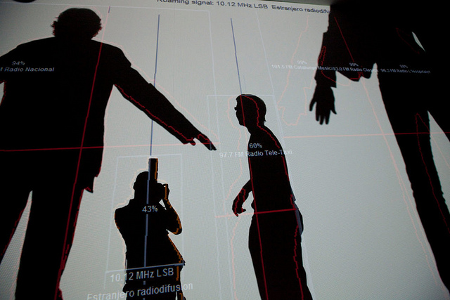
Oct 2011 – Mar 2012 · Arts Santa Monica, Barcelona
Invisible Fields
Co-curated with José Luis de Vicente, this exhibition gathered artists, designers, and scientists to make the radio spectrum visible: the invisible electromagnetic environment that underpins all contemporary technology. It is the project that most directly connects my early practice as an artist working with radio signals to my later curatorial thinking.
Visit →Talks
Over the past decade and a half I have given more than 60 talks worldwide, at venues ranging from CERN and TED to the Dubai Future Forum, on subjects ranging from cosmology and quantum physics to the future of museums and the role of art in understanding planetary change.
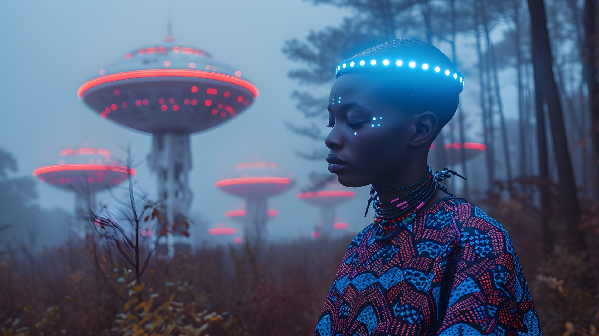
Futures Imagined: Foresight at ArtScience Museum
Generous Futures, Woven Together · ArtScience Museum, Singapore · November 2025
A talk delivered at the Generous Futures, Woven Together symposium, making the case for museums as future-oriented institutions alongside their traditional role as custodians of the past. Drawing on three exhibitions, HUMAN+: The Future of Our Species, 2219: Futures Imagined, and Another World Is Possible, it argues that giving visitors embodied, experiential encounters with possible futures is one of the most powerful things a museum can do.
Watch →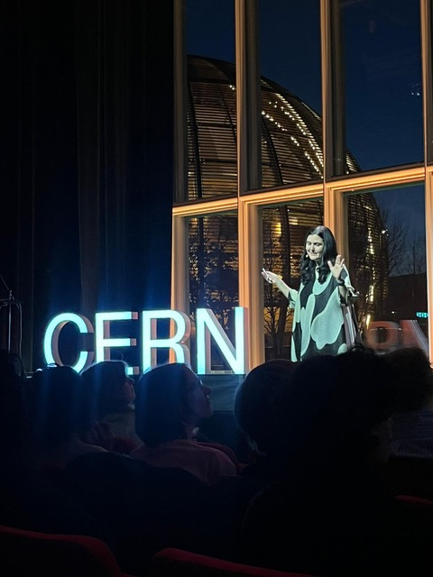
But Also Needed Is Imagination: Art and the Very Strange Patterns of Quantum Mechanics
Art and Science Summit, CERN, Geneva · February 2025
An invitation to speak at the world's leading particle physics laboratory, exploring how artistic thinking engages with the fundamental strangeness of quantum mechanics, and how cultural institutions can hold open the questions that science raises but cannot fully answer.
Watch →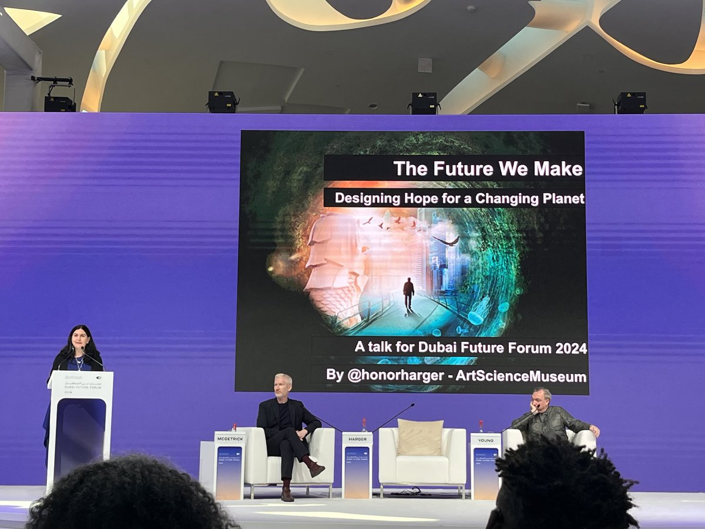
The Future We Make: Designing Hope for a Changing Planet
Dubai Future Forum · November 2024
A talk for one of the world's most prominent futures-focused gatherings, arguing that hope is not naivety but a design proposition: something that needs to be actively constructed through art, storytelling, and collective imagination.
Watch →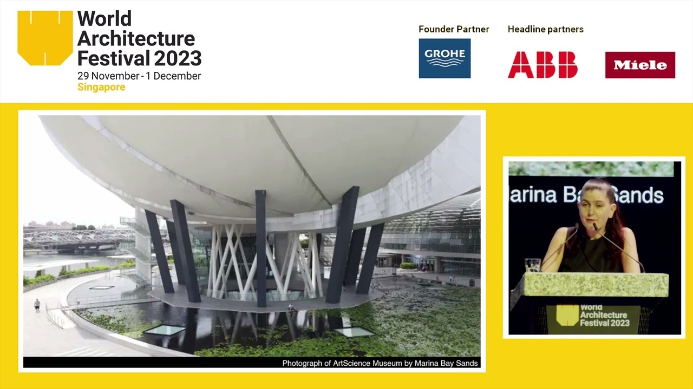
Sculpting Space
World Architecture Festival, Singapore · November 2023
A keynote for the world's largest annual architecture festival, exploring how ArtScience Museum curates in active dialogue with Moshe Safdie's iconic building. From exhibitions including Journey to Infinity, Wind Walkers, and Radical Curiosity to large-scale projection mapping works by teamLab and Refik Anadol, it traces how the architecture becomes a participant in the curatorial programme rather than a backdrop to it.
Watch →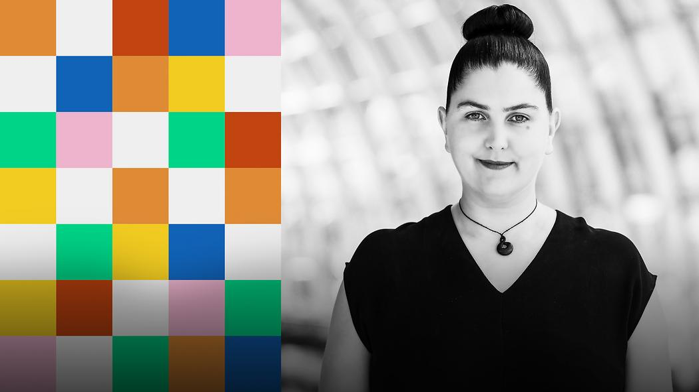
How Museums Help Communities Heal
TED2020: Uncharted · June 2020
My second TED talk was delivered in the depths of the Covid-19 pandemic. It explored how cultural institutions can sustain and deepen their relationship with communities in conditions of radical disruption, using my own work at ArtScience Museum as a case study. It's been watched over 200,000 times.
Watch →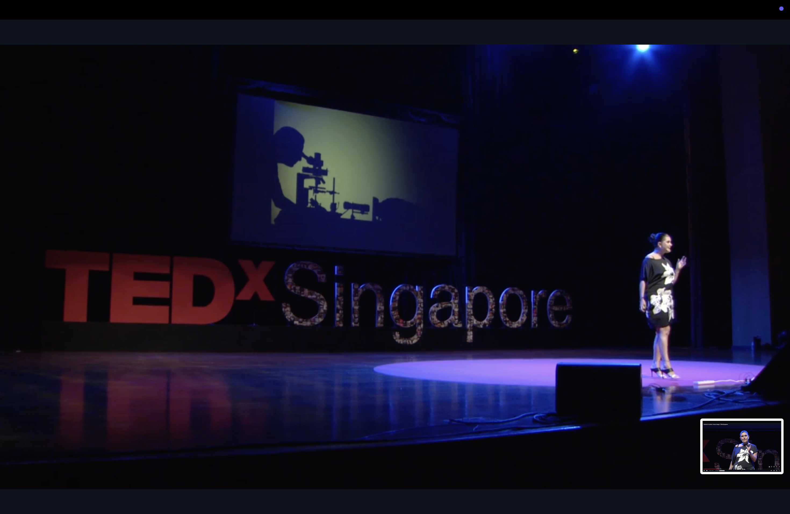
Science is Culture
TEDxSingapore · November 2015
An argument that science is not a separate domain from culture but one of its most vital expressions, and that cultural institutions have a particular responsibility to close the gap between scientific knowledge and public understanding.
Watch →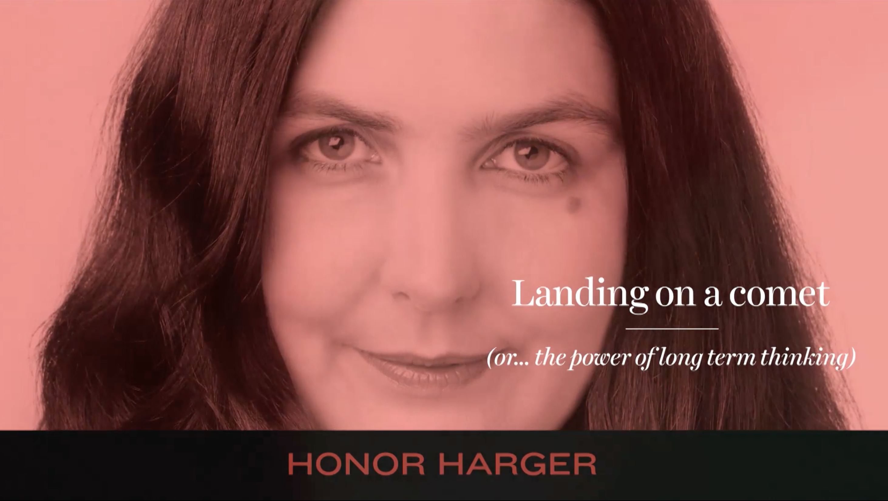
Landing on a Comet
Webstock, Wellington · February 2015
Built around the European Space Agency's Rosetta mission, this talk used the first-ever landing of a probe on a comet to think about long-term thinking, scientific wonder, and the role art and culture play in helping the public inhabit moments of profound discovery.
Watch →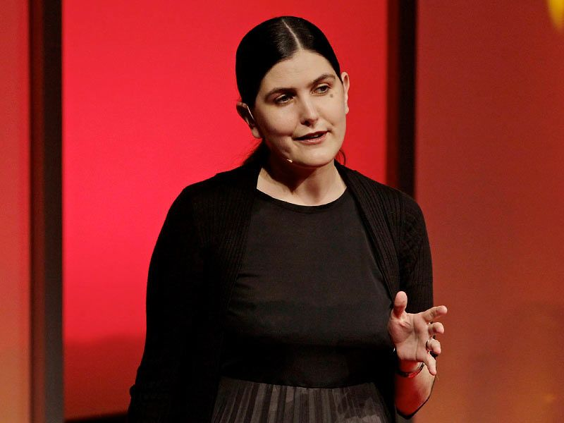
A History of the Universe in Sound
TEDSalon London · 2011
My first TED talk was delivered in London, and it explored the relationship between art, science, and the cosmos. Rooted in the practice of r a d i o q u a l i a, it argued that listening to the universe, hearing the radio signals emitted by pulsars, planets, and solar wind transformed into sound, is a fundamentally different and more intimate way of understanding the universe than looking at it. It's had over one million views.
Watch →Other Projects
Alongside curatorial work, I have directed major international festivals, led environmental impact projects that have produced measurable conservation outcomes, and contributed to international research and policy projects. The thread connecting all of it is a belief that art in dialogue with science can change how people see the world and what they do in it.
Artistic Practice
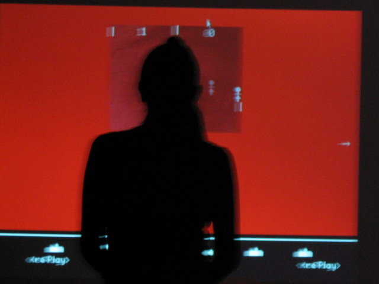
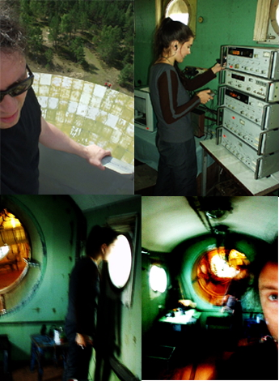
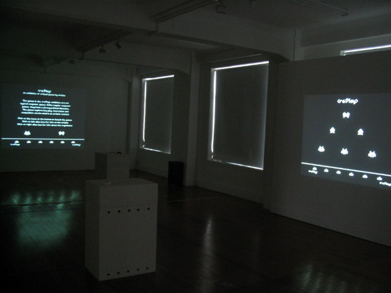
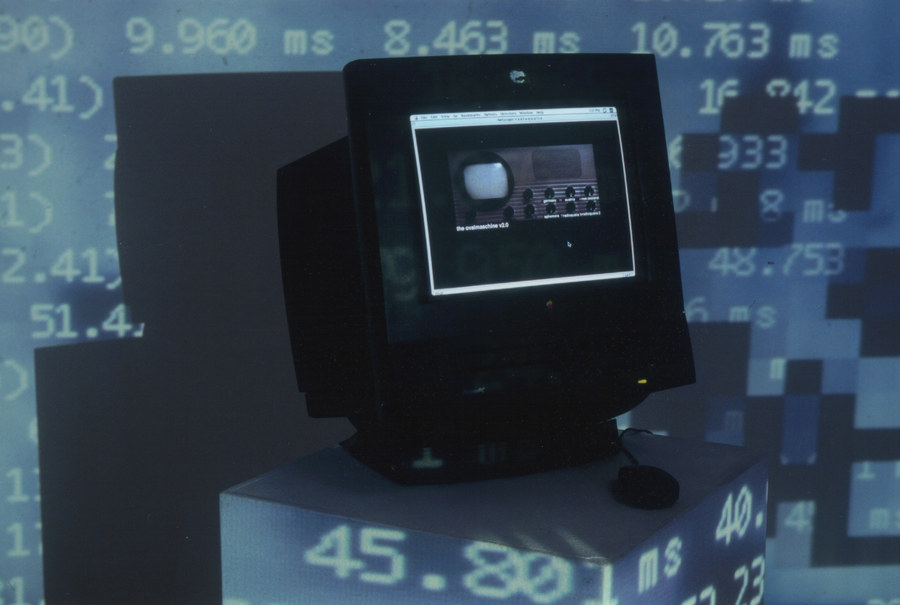
r a d i o q u a l i a · 1998–2010
A collaborative art practice formed with Adam Hyde, producing installations, performances, and online artworks exploring the electromagnetic spectrum and the sounds of space.
The practice's best-known work, Radio Astronomy, was a radio station that broadcast real-time signals from pulsars, planets, and solar wind as audible sound, drawing on partnerships with radio telescopes in Latvia, the UK, and the US. Shown internationally including the New Museum, New York; broadcast on Resonance FM, London, and Radio New Zealand.
This practice informed part-time doctoral research at Z-Node, a facility run by the Zurich University of the Arts (ZHdK) in partnership with the University of Plymouth, UK.
Wikipedia →Festivals
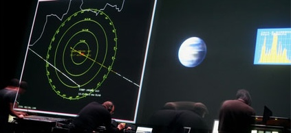
AV Festival
The UK's largest international festival of digital art, for which I established the organising entity, Audio Visual Arts North East, as an independent charitable organisation. Two biennial editions: AV Festival 06: LifeLike and AV Festival 08: Broadcast. Grew to over 77,000 attendees across both editions.
Wikipedia →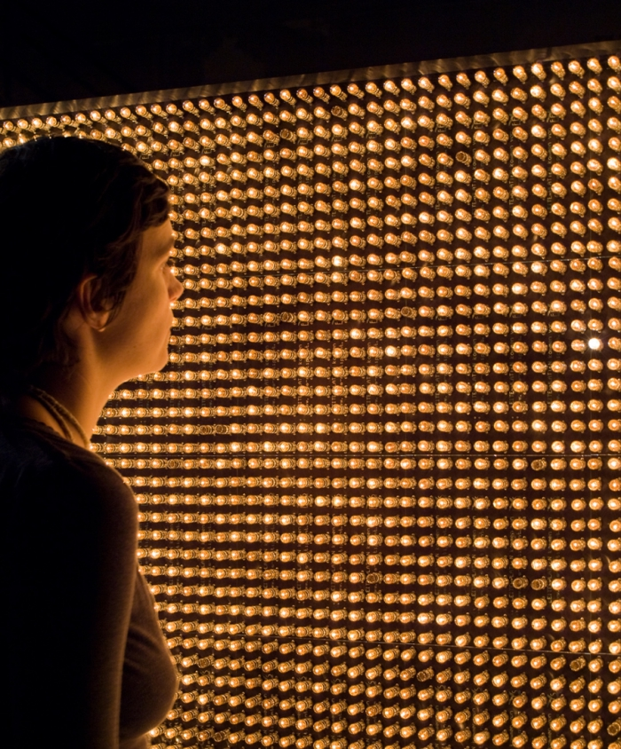
transmediale.10: Futurity Now
One of Europe's most significant festivals of art and digital culture, for which I served as curator, directing the exhibition Future Obscura, a performance programme of 15 concerts, and a conference featuring over 40 speakers.
transmediale.de →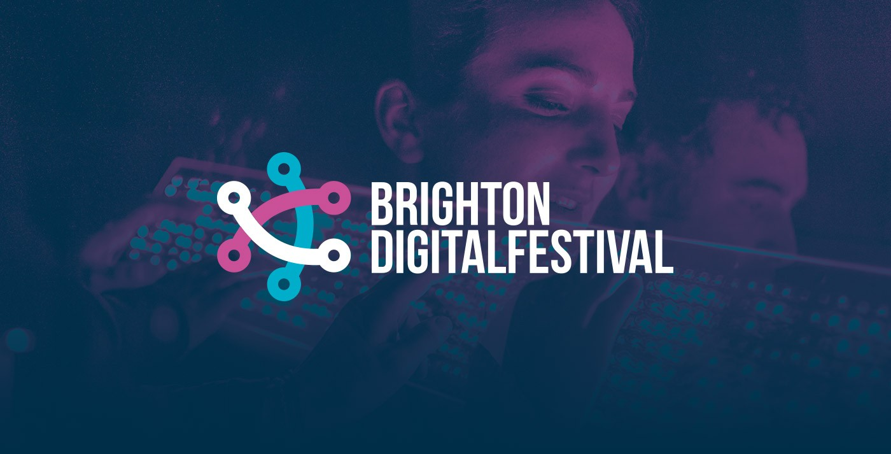
Brighton Digital Festival
A festival I co-founded with Clearleft to connect Brighton's digital creative industries and arts communities. Grown into one of the UK's leading annual festivals of digital culture.
brightondigitalfestival.co.uk →Environmental Projects
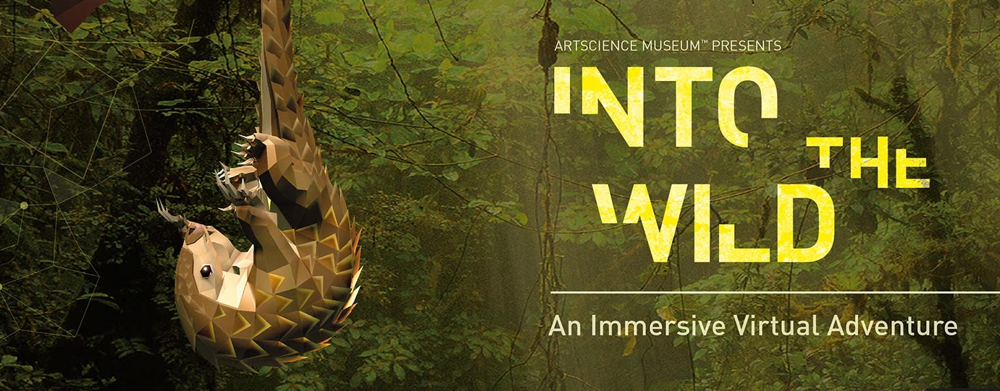
Into the Wild
A large-scale AR experience developed with WWF, Google, and Lenovo that transformed the museum into a virtual rainforest of Southeast Asia. For every virtual tree planted by a visitor, a real tree was planted in Sumatra — resulting in over 10,000 trees in one of the last intact rainforests in the region.
Visit →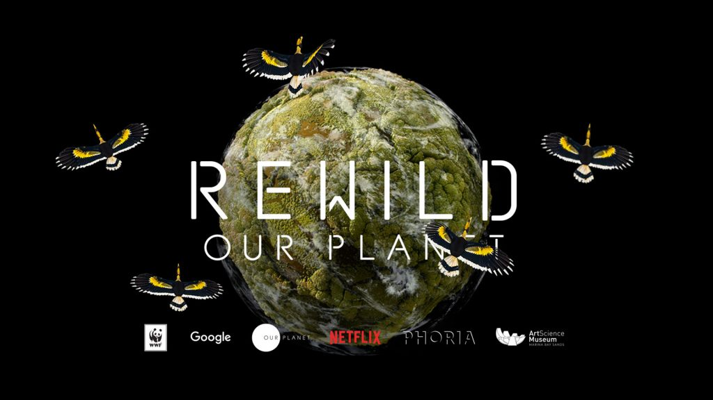
REWILD Our Planet
A social augmented reality experience developed with WWF, Google, and Netflix, using footage from David Attenborough's Our Planet to immerse visitors in four endangered biomes. Singapore's first social AR experience — subsequently toured to New York and Bristol.
Visit →
Sensory Odyssey & 10 for Zero Awards
The Asian premiere of a major immersive natural history exhibition, whose launch incorporated the 10 for Zero Awards with Conservation International Singapore. The exhibition resulted in the planting of 20,000 mangrove trees in Sarawak, Malaysia, in partnership with WWF Singapore.
Visit →Research & Policy
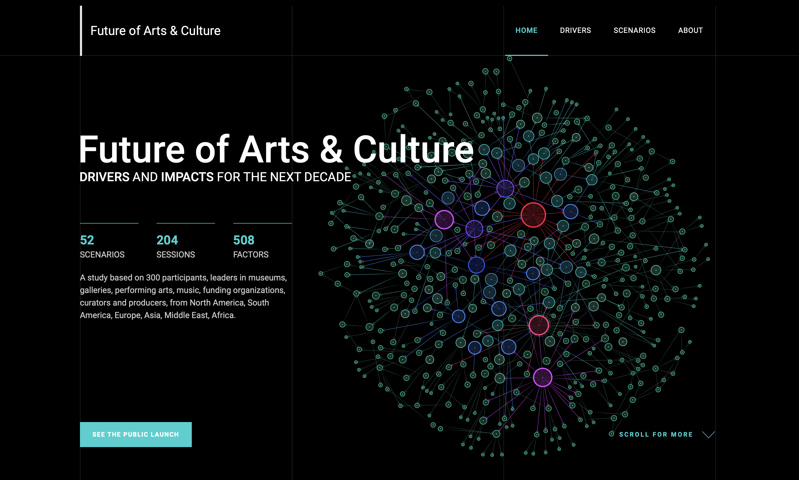
Future of Arts and Culture
What will happen to arts and culture over the next decade? Not the optimistic version, and not the dystopian one, but the full range of plausible futures shaped by the forces actually in play: technological disruption, climate change, shifting patterns of funding and attention, the fracturing of shared public space. This participatory foresight exercise drew more than 300 contributors across 204 sessions to map the drivers of change facing the global cultural sector. Built on the Futurescaper platform and led by a consortium including Annette Mees (King's College London), Scott Smith (Changeist), and Tateo Nakajima (Arup), the process yielded 52 distinct scenarios grouped into three broad futures: Spectaculars and Small Stages, Global Network of Communities, and Platforms and Multiverses.
Read →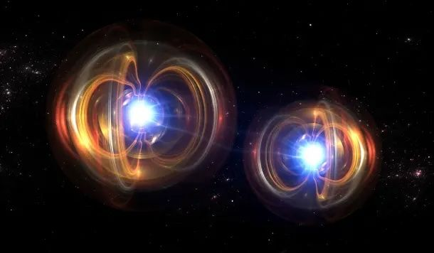
Quantum Crossroads: A Vision for Art, Culture and Quantum Science and Technology
A policy vision paper submitted to UNESCO drawing on the contributions of 23 scientists, artists, educators, and Indigenous knowledge holders from 12 countries, setting out practical recommendations for the next decade of quantum science and technology.
Read →